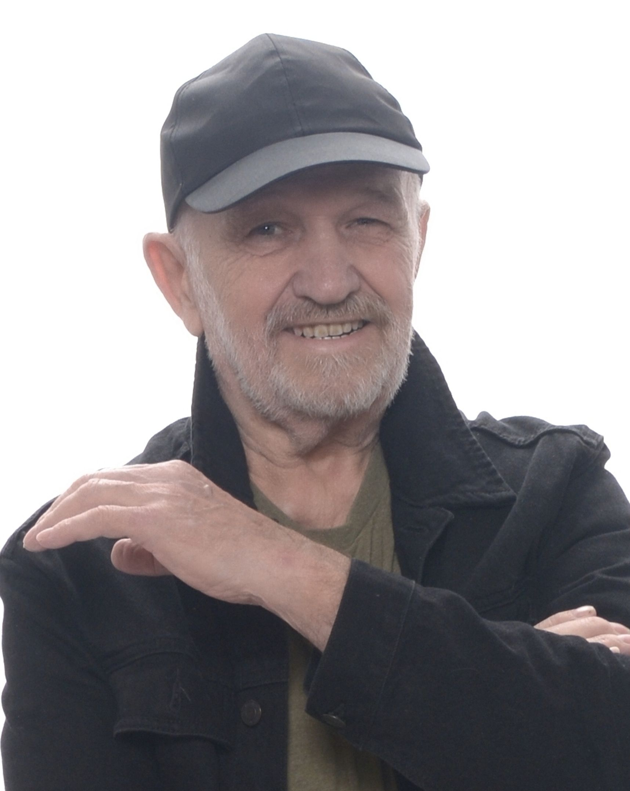
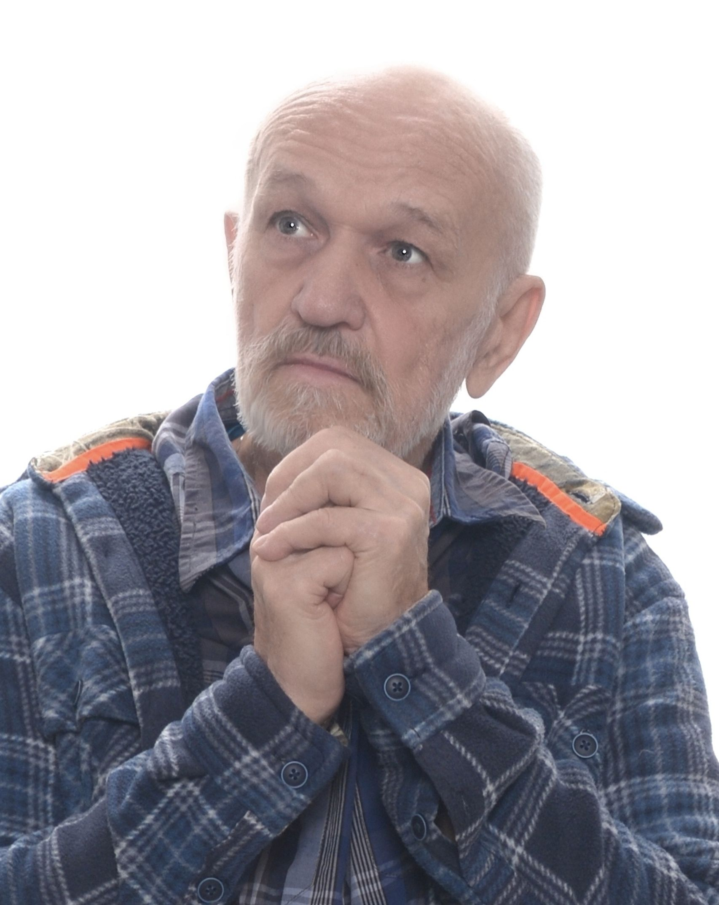
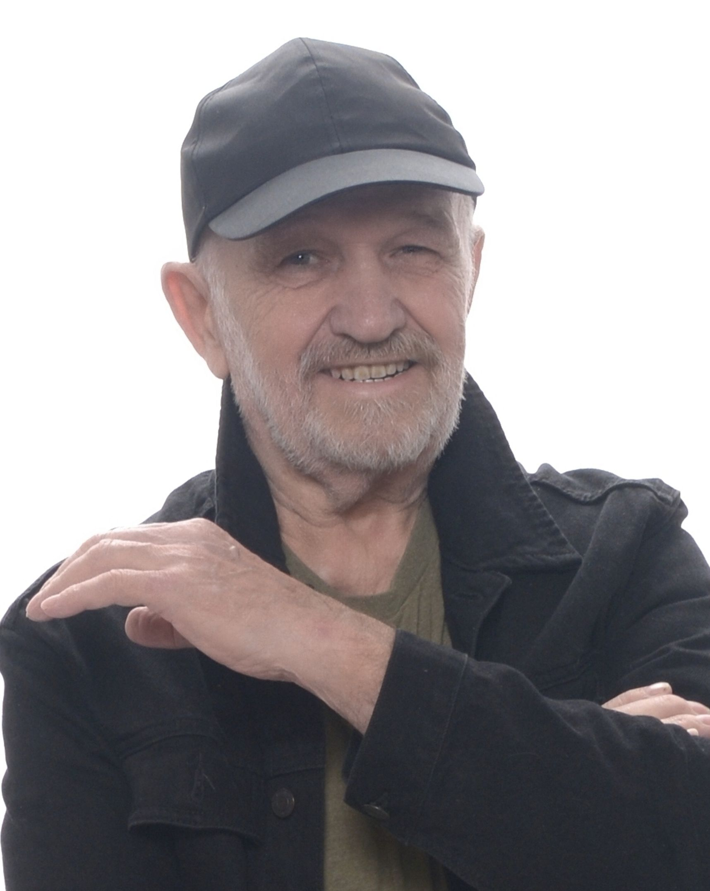
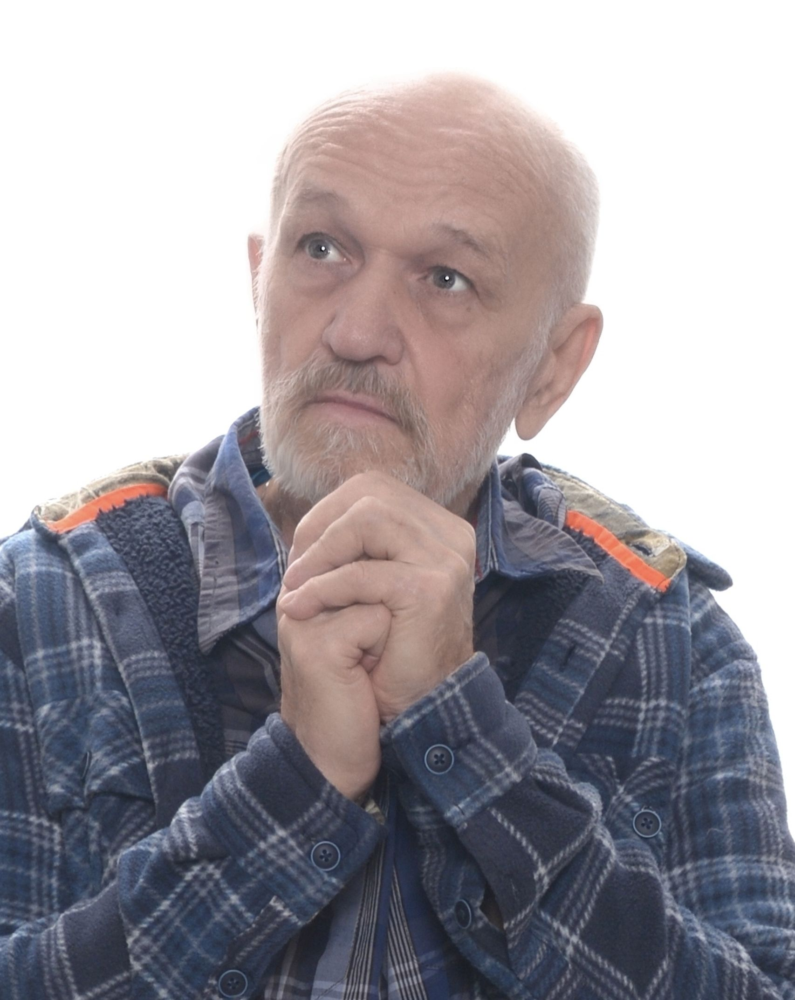
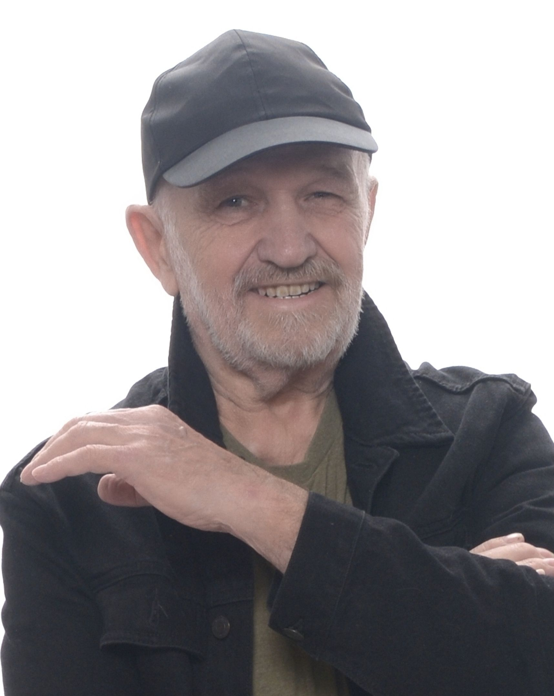
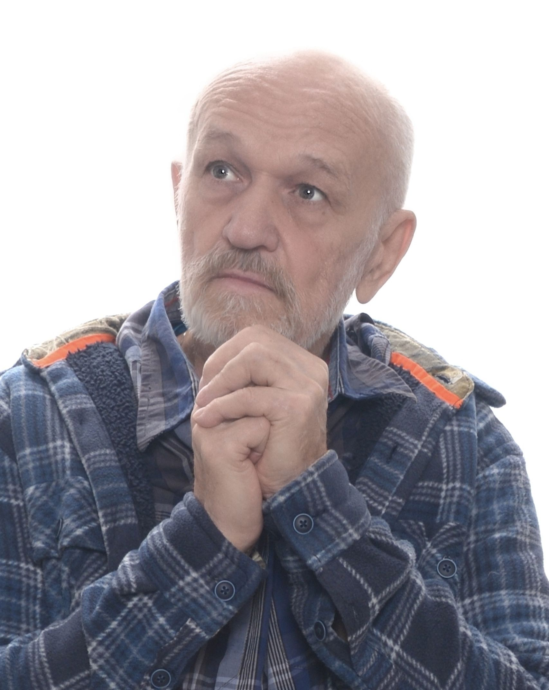

Gallery
 



Actor | Performer | Storyteller
Experienced stage and screen actor passionate about dramatic arts and storytelling. Trained in classical theatre and contemporary performance with a diverse portfolio of roles.

